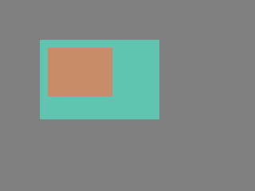
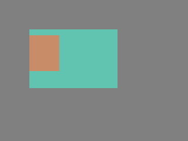

Nozioni di base sui Widget¶
Cos'è un Widget?¶
Un Widget è l'elemento costitutivo di base dell'interfaccia utente LVGL.
Esempi di Widget: Base Widget (e Screen), Button, Label, Image, List, Chart e Text Area.
Consultare il paragrafo Tutti i Widget per vedere tutti i tipi di Widget.
Tutti i Widget sono referenziati utilizzando un puntatore lv_obj_t come handle. Questo puntatore può essere utilizzato in seguito per leggere o modificare gli attributi del Widget.
Attributi¶
Attributi di base¶
Tutti i tipi di Widget condividono alcuni attributi di base:
Posizione
Dimensione
Genitore
Stili
Eventi generati
Flag come Clickable, Scrollable, ecc.
Ecc.
È possibile impostare/ottenere questi attributi con le funzioni lv_obj_set_... e lv_obj_get_.... Ad esempio:
/* Set basic Widget attributes */
lv_obj_set_size(btn1, 100, 50); /* Set a button's size */
lv_obj_set_pos(btn1, 20,30); /* Set a button's position */
Per dettagli completi su posizione, dimensione, coordinate e layout, Posizioni, Dimensioni e Layout.
Attributi specifici dei Widget¶
Anche i tipi di Widget hanno attributi speciali. Ad esempio, uno slider ha
Valori minimi e massimi
Valore corrente
Per questi attributi speciali, ogni tipo di Widget può avere funzioni API univoche. Ad esempio, per uno slider:
/* Set slider specific attributes */
lv_slider_set_range(slider1, 0, 100); /* Set the min. and max. values */
lv_slider_set_value(slider1, 40, LV_ANIM_ON); /* Set the current value (position) */
L'API dei widget è descritta nella loro Documentazione ma è anche possibile consultare i rispettivi file header (ad esempio widgets/lv_slider.h)
Genitori e figli¶
Il genitore di un Widget viene impostato al momento della creazione del widget: il genitore viene passato alla funzione di creazione.
Per ottenere il genitore corrente di un Widget, si usa lv_obj_get_parent(widget).
È possibile spostare il widget su un nuovo genitore con lv_obj_set_parent(widget, new_parent).
Per ottenere un figlio specifico di un genitore, utilizzare lv_obj_get_child(parent, idx). Alcuni esempi per idx:
0preleva il primo il figlio1preleva il secondo il figlio-1preleva il figlio creato per ultimo
È possibile scorrere i figli di un Widget genitore in questo modo:
uint32_t i;
for(i = 0; i < lv_obj_get_child_count(parent); i++) {
lv_obj_t * child = lv_obj_get_child(parent, i);
/* Do something with child. */
}
lv_obj_get_index(widget) restituisce l'indice del Widget nel suo genitore. Equivale al numero di figli più grandi nel genitore.
È possibile portare un Widget in primo piano o in secondo piano con lv_obj_move_foreground(widget) e lv_obj_move_background(widget).
È possibile modificare l'indice di un Widget nel suo genitore utilizzando lv_obj_move_to_index(widget, index).
Si può scambiare la posizione di due Widget con lv_obj_swap(widget1, widget2).
Per ottenere lo Screen di un Widget (genitore di livello più alto) si usa lv_obj_get_screen(widget).
Meccanismi di Funzionamento¶
Struttura genitore-figlio¶
Un Widget genitore può essere considerato il contenitore dei suoi figli. Ogni Widget ha esattamente un Widget genitore (eccetto le "Screen" [schermate]), ma un Widget genitore può avere un numero qualsiasi di figli. Non ci sono limitazioni per il tipo di genitore, ma ci sono Widget che in genere sono un genitore (ad esempio un pulsante) o un figlio (ad esempio una "label" [etichetta]).
Spostamento simultaneo¶
Se la posizione di un genitore cambia, i figli si sposteranno di conseguenza. Pertanto, tutte le posizioni sono relative al genitore.

lv_obj_t * parent = lv_obj_create(lv_screen_active()); /* Create a parent Widget on current Screen */
lv_obj_set_size(parent, 100, 80); /* Set size of parent */
lv_obj_t * widget1 = lv_obj_create(parent); /* Create a Widget on previously created parent Widget */
lv_obj_set_pos(widget1, 10, 10); /* Set position of new Widget */
Modificare la posizione del genitore:
lv_obj_set_pos(parent, 50, 50); /* Move the parent. The child will move with it. */
(Per semplicità, la regolazione dei colori dei Widget non è mostrata nell'esempio).
Visibilità solo sul genitore¶
Se un elemento figlio è parzialmente o completamente esterno al genitore, le parti esterne non saranno visibili.
lv_obj_set_x(widget1, -30); /* Move the child a little bit off the parent */
Questo comportamento può essere sovrascritto con lv_obj_add_flag(widget, LV_OBJ_FLAG_OVERFLOW_VISIBLE) che consente di disegnare gli elementi figlio all'esterno del genitore. Inoltre, è necessario registrare il seguente evento di callback (non richiesto nelle versioni precedenti).
Nota: ext_width deve essere la larghezza assoluta massima entro cui verranno disegnati gli elementi figlio.
static void ext_draw_size_event_cb(lv_event_t * e)
{
lv_event_set_ext_draw_size(e, 30); /* Set 30px extra draw area around the widget */
}
Creazione ed eliminazione di Widget¶
In LVGL, i Widget possono essere creati ed eliminati dinamicamente in fase di esecuzione. Ciò significa che solo i Widget attualmente creati (esistenti) consumano RAM.
Questo consente la creazione di uno Screen solo quando si clicca su un pulsante per aprirlo e l'eliminazione degli Screen quando ne viene caricato uno nuovo.
Le interfacce utente possono essere create in base all'ambiente corrente del dispositivo. Ad esempio, è possibile creare misuratori, grafici, barre e cursori in base ai sensori attualmente collegati.
Ogni widget ha la sua funzione create con un prototipo come questo:
lv_obj_t * lv_<widget>_create(lv_obj_t * parent, <other parameters if any>);
In genere, le funzioni create hanno solo un parametro parent che indica su quale Widget creare il nuovo Widget.
Il valore restituito è un puntatore al Widget creato con tipo lv_obj_t *.
Esiste una funzione delete comune per tutti i tipi di Widget. Elimina il Widget e tutti i suoi elementi figlio.
void lv_obj_delete(lv_obj_t * widget);
lv_obj_delete() eliminerà immediatamente il Widget. Se per qualsiasi motivo non è possibile eliminare immediatamente il Widget, è possibile utilizzare lv_obj_delete_async(widget) che eseguirà l'eliminazione alla successiva chiamata di lv_timer_handler(). Questo è utile, ad esempio, se si desidera eliminare l'elemento genitore di un Widget nell'handler LV_EVENT_DELETE.
È possibile rimuovere tutti gli elementi figlio di un Widget (ma non il Widget stesso) utilizzando lv_obj_clean(widget).
Si può usare lv_obj_delete_delayed(widget, 1000) per eliminare un widget dopo un certo periodo di tempo. Il ritardo è espresso in millisecondi.
A volte non si è sicuri che un widget sia stato eliminato e c'è bisogno di un modo per verificare se è ancora "vivo". In qualsiasi momento prima che il Widget venga eliminato, si può usare cpp:expr:lv_obj_null_on_delete(&widget) per impostare il puntatore del Widget su NULL quando il Widget viene eliminato.
Assicurarsi che la variabile puntatore rimanga valida finché il Widget non viene eliminato. Ecco un esempio:
void some_timer_callback(lv_timer_t * t)
{
static lv_obj_t * my_label;
if(my_label == NULL) {
my_label = lv_label_create(lv_screen_active());
lv_obj_delete_delayed(my_label, 1000);
lv_obj_null_on_delete(&my_label);
}
else {
lv_obj_set_x(my_label, lv_obj_get_x(my_label) + 1);
}
}
Screen¶
Cosa sono gli Screen?¶
Da non confondere con un Display (lv_display), gli Screen sono semplicemente qualsiasi Widget creato senza un elemento genitore (ad esempio, passando NULL per l'argomento parent durante la creazione). In quanto tali, costituiscono la "root" [radice] di un "Widget Tree" [Albero dei Widget].
Normalmente, a questo scopo viene utilizzato il Widget Base, poiché dispone di tutte le funzionalità necessarie alla maggior parte degli Screen. Ma un Widget Image (lv_image) può anche essere utilizzato per creare uno sfondo per il "Widget Tree".
Tutti gli Screen:
vengono automaticamente associati al Display di Default corrente al momento della creazione dello Screen;
occupano automaticamente l'intera area del display associato;
non possono essere spostati, ovvero funzioni come
lv_obj_set_pos()elv_obj_set_size()non possono essere utilizzate sugli Screen.
Ogni oggetto Display (lv_display) può avere più Screen [schermate] associate, ma non viceversa. Quindi la relazione:
Display
|
--- (one or more)
/|\
Screen Widgets (root of a Widget Tree)
|
O (zero or more)
/|\
Child Widgets
Creazione di Screen¶
Gli Screen vengono creati in questo modo:
lv_obj_t * scr1 = lv_obj_create(NULL);
Gli Screen possono essere eliminati con lv_obj_delete(scr), ma assicurarsi di non eliminare Lo Screen Attivo.
Lo Screen Attivo¶
Sebbene a ogni oggetto Display (lv_display) possa essere associato un numero qualsiasi di Widget Screen, solo uno di questi Screen è considerato "Attivo" in un dato momento. Quello Screen è definito lo "Screen Attivo" del Display. Per questo motivo, su un display verrà visualizzato solo uno Screen e i relativi Widget figli alla volta.
Quando ogni oggetto Display (lv_display) è stato creato, è stato creato uno Screen di default con esso e impostato come "Screen Attivo".
Per ottenere un puntatore allo "Screen Attivo", si chiama lv_screen_active().
Per impostare uno Screen come "Screen Attivo", si chiama lv_screen_load() o lv_screen_load_anim().
Caricamento degli Screen¶
Per caricare un nuovo Screen, si usa lv_screen_load(scr1). Questo imposta scr1 come Screen Attivo.
Caricare Screen con Opzioni Estese¶
Esiste un modo per caricare gli Screen che offre 2 opzioni aggiuntive (estese), consentendo al chiamante di specificare:
un metodo di transizione opzionale e
un'opzione per eliminare automaticamente la schermata visualizzata.
lv_screen_load_anim(scr, transition_type, time, delay, auto_del). Esistono i seguenti tipi di transizione:
LV_SCREEN_LOAD_ANIM_NONE: Cambia immediatamente dopodelaymillisecondiLV_SCREEN_LOAD_ANIM_OVER_LEFT,LV_SCREEN_LOAD_ANIM_OVER_RIGHT,LV_SCREEN_LOAD_ANIM_OVER_TOPeLV_SCREEN_LOAD_ANIM_OVER_BOTTOM: Spostano il nuovo Screen sopra quello corrente verso la direzione indicataLV_SCREEN_LOAD_ANIM_OUT_LEFT,LV_SCREEN_LOAD_ANIM_OUT_RIGHT,LV_SCREEN_LOAD_ANIM_OUT_TOPeLV_SCREEN_LOAD_ANIM_OUT_BOTTOM: Spostano il vecchio Screen sopra quello corrente nella direzione indicataLV_SCREEN_LOAD_ANIM_MOVE_LEFT,LV_SCREEN_LOAD_ANIM_MOVE_RIGHT,LV_SCREEN_LOAD_ANIM_MOVE_TOPeLV_SCREEN_LOAD_ANIM_MOVE_BOTTOM: Spostano sia lo Screen corrente che quello nuovo nella direzione indicataLV_SCREEN_LOAD_ANIM_FADE_INeLV_SCREEN_LOAD_ANIM_FADE_OUT: Dissolvenza del nuovo Screen su quello precedente, o viceversa.
Impostando auto_del a true il vecchio Screen verrà automaticamente eliminato al termine dell'animazione (se presente).
Il nuovo Screen diventerà attivo (restituito da lv_screen_active()) all'avvio dell'animazione dopo il tempo delay. Tutti gli input sono disabilitati durante l'animazione dello Screen.
I Layer¶
Quando viene creato un oggetto lv_display_t, vengono creati 4 Screen (layer) a cui vengono associati.
Layer Inferiore
Lo Screen Attivo
Layer Superiore
Layer di Sistema
1, 3 e 4 sono indipendenti da Lo Screen Attivo e verranno visualizzati (se contengono qualcosa di visibile) indipendentemente da quale sia lo Screen Attivo. Consultare Layer dello Screen e Screen Trasparenti per maggiori informazioni.
Parti¶
I widget sono costituiti da più parti. Ad esempio, un Widget Base utilizza le parti: "main" e la barra di scorrimento, mentre uno Slider utilizza le parti "main", l'indicatore e la manopola. Le parti sono simili agli pseudo-elementi in CSS.
In LVGL sono presenti le seguenti parti predefinite:
LV_PART_MAIN: Uno sfondo simile a un rettangoloLV_PART_SCROLLBAR: Le barre di scorrimentoLV_PART_INDICATOR: Indicatore, ad esempio per slider, barra, switch o la tick box della checkboxLV_PART_KNOB: Come una maniglia da afferrare per regolare il valoreLV_PART_SELECTED: Indica l'opzione o la sezione attualmente selezionataLV_PART_ITEMS: Utilizzato se il widget ha più elementi simili (ad esempio, celle di tabella)LV_PART_CURSOR: Contrassegna un punto specifico, ad esempio il cursore dell'area di testo o del graficoLV_PART_CUSTOM_FIRST: Da qui è possibile aggiungere parti personalizzate.
Lo scopo principale delle parti è consentire di definire lo stile dei "componenti" dei widget. Sono descritte più dettagliatamente nella sezione Panoramica sugli Stili.
Stati¶
Il Widget può trovarsi in una combinazione dei seguenti stati:
LV_STATE_DEFAULT: Normale, stato "a riposo"LV_STATE_CHECKED: Stato attivato o selezionatoLV_STATE_FOCUSED: Focus tramite tastiera, encoder o clic tramite touchpad/mouseLV_STATE_FOCUS_KEY: Focus tramite tastiera o encoder ma non tramite touchpad/mouseLV_STATE_EDITED: Modifica tramite encoderLV_STATE_HOVERED: Sovrapposto dal mouse (non supportato ora)LV_STATE_PRESSED: PremutoLV_STATE_SCROLLED: In corso di scrollingLV_STATE_DISABLED: Stato disabilitatoLV_STATE_USER_1: Stato personalizzatoLV_STATE_USER_2: Stato personalizzatoLV_STATE_USER_3: Stato personalizzatoLV_STATE_USER_4: Stato personalizzato
Di solito, gli stati vengono modificati automaticamente dalla libreria quando l'utente interagisce con un widget (preme, rilascia, seleziona, ecc.). Tuttavia, gli stati possono essere modificati anche manualmente. Per impostare o cancellare uno stato specifico (senza modificare gli altri stati), utilizzare lv_obj_add_state(widget, LV_STATE_...) e lv_obj_remove_state(widget, LV_STATE_...). In entrambi i casi è possibile utilizzare anche valori di stato con OR. Ad esempio lv_obj_add_state(widget, LV_STATE_PRESSED | LV_PRESSED_CHECKED).
Per saperne di più sugli stati, leggere la sezione correlata della Panoramica sugli Stili.
I Flag¶
Ci sono alcuni attributi del Widget che possono essere abilitati/disabilitati tramite lv_obj_add_flag(widget, LV_OBJ_FLAG_...) e lv_obj_remove_flag(widget, LV_OBJ_FLAG_...).
LV_OBJ_FLAG_HIDDENNasconde il Widget. (Come se non ci fosse affatto)LV_OBJ_FLAG_CLICKABLERende il Widget cliccabile dai dispositivi di inputLV_OBJ_FLAG_CLICK_FOCUSABLEAggiunge lo stato focused al Widget quando cliccatoLV_OBJ_FLAG_CHECKABLEAttiva/disattiva lo stato checked quando si clicca sul widgetLV_OBJ_FLAG_SCROLLABLERende il widget "scrollable"LV_OBJ_FLAG_SCROLL_ELASTICConsente lo "scrolling" interno ma a velocità inferioreLV_OBJ_FLAG_SCROLL_MOMENTUMFa sì che il Widget continui a "scrollare" quando viene "lanciato"LV_OBJ_FLAG_SCROLL_ONEConsente lo scrolling di un solo elemento figlio agganciabileLV_OBJ_FLAG_SCROLL_CHAIN_HORConsente la propagazione dello scorrimento orizzontale a un elemento genitoreLV_OBJ_FLAG_SCROLL_CHAIN_VERConsente la propagazione dello scorrimento verticale a un elemento genitoreLV_OBJ_FLAG_SCROLL_CHAINSemplice packaging per (LV_OBJ_FLAG_SCROLL_CHAIN_HOR | LV_OBJ_FLAG_SCROLL_CHAIN_VER)LV_OBJ_FLAG_SCROLL_ON_FOCUSScorre automaticamente il Widget per renderlo visibile quando ha il focusLV_OBJ_FLAG_SCROLL_WITH_ARROWConsente lo scorrimento del Widget con i tasti frecciaLV_OBJ_FLAG_SNAPPABLESe lo "scroll snap" è abilitato sul genitore, può agganciarsi a questo WidgetLV_OBJ_FLAG_PRESS_LOCKMantiene il Widget premuto anche se la pressione è stata spostata dal WidgetLV_OBJ_FLAG_EVENT_BUBBLEPropaga gli eventi anche al genitoreLV_OBJ_FLAG_EVENT_TRICKLEPropaga gli eventi anche ai figliLV_OBJ_FLAG_STATE_TRICKLEPropaga i cambi di stato anche ai figliLV_OBJ_FLAG_GESTURE_BUBBLEPropaga i gesti al genitoreLV_OBJ_FLAG_ADV_HITTESTConsente di eseguire test di hit (clic) più accurati. Ad esempio tenendo conto degli angoli arrotondatiLV_OBJ_FLAG_IGNORE_LAYOUTImposta il Widget come non posizionato dai layoutLV_OBJ_FLAG_FLOATINGNon "scrolla" il Widget quando il genitore "scrolla" e ignora il layoutLV_OBJ_FLAG_SEND_DRAW_TASK_EVENTSAbilita l'invio di eventiLV_EVENT_DRAW_TASK_ADDEDLV_OBJ_FLAG_OVERFLOW_VISIBLENon ritagliare il contenuto del figlio al contorno del genitoreLV_OBJ_FLAG_FLEX_IN_NEW_TRACKAvvia un nuovo "flex track" su questo elementoLV_OBJ_FLAG_LAYOUT_1Flag personalizzato, libero da usare da LayoutLV_OBJ_FLAG_LAYOUT_2Flag personalizzato, libero da usare da LayoutLV_OBJ_FLAG_WIDGET_1Flag personalizzato, utilizzabile liberamente dal widgetLV_OBJ_FLAG_WIDGET_2Flag personalizzato, utilizzabile liberamente dal widgetLV_OBJ_FLAG_USER_1Flag personalizzato, utilizzabile liberamente dall'utenteLV_OBJ_FLAG_USER_2Flag personalizzato, utilizzabile liberamente dall'utenteLV_OBJ_FLAG_USER_3Flag personalizzato, utilizzabile liberamente dall'utenteLV_OBJ_FLAG_USER_4Flag personalizzato, utilizzabile liberamente dall'utente
Alcuni esempi:
/* Hide on Widget */
lv_obj_add_flag(widget, LV_OBJ_FLAG_HIDDEN);
/* Make a Widget non-clickable */
lv_obj_remove_flag(widget, LV_OBJ_FLAG_CLICKABLE);
Eventi del Widget di Base¶
Eventi dai Dispositivi di input¶
LV_EVENT_PRESSEDIl Widget è stato premuto.LV_EVENT_PRESSINGIl Widget è premuto (inviato continuamente durante la pressione).LV_EVENT_PRESS_LOSTIl Widget è ancora premuto, ma il cursore/dito è stato spostato fuori dal Widget.LV_EVENT_SHORT_CLICKEDIl Widget è stato premuto per un breve periodo di tempo, poi rilasciato. Non inviato se si "scrolla".LV_EVENT_SINGLE_CLICKEDInviato per il primo clic breve entro una breve distanza e un breve intervallo di tempo.LV_EVENT_DOUBLE_CLICKEDInviato per il secondo clic breve entro una breve distanza e un breve intervallo di tempo.LV_EVENT_TRIPLE_CLICKEDInviato per il terzo clic breve entro una breve distanza e un breve intervallo di tempo.LV_EVENT_LONG_PRESSEDL'oggetto è stato premuto per almenolong_press_time. Non inviato se si "scrolla".LV_EVENT_LONG_PRESSED_REPEATInviato dopolong_press_timeognilong_press_repeat_timems. Non inviato se si "scrolla".LV_EVENT_CLICKEDInviato al rilascio se non si "scrolla" (indipendentemente dalla pressione prolungata).LV_EVENT_RELEASEDInviato ogni volta che il Widget viene rilasciato.LV_EVENT_SCROLL_BEGINInizia lo "scrolling". Il parametro "event" è un puntatore all'animazione dello "scroll". Può essere modificato.LV_EVENT_SCROLL_THROW_BEGINRicevuto all'inizio dello "scrolling".LV_EVENT_SCROLL_ENDScrolling terminato.LV_EVENT_SCROLLScrollingLV_EVENT_GESTUREÈ stato rilevato un gesto. Il gesto si ottiene conlv_indev_get_gesture_dir(lv_indev_active());LV_EVENT_KEYUn tasto viene inviata al Widget. La chiave si ottiene conlv_indev_get_key(lv_indev_active());LV_EVENT_FOCUSEDIl Widget ha ricevuto il focus,LV_EVENT_DEFOCUSEDIl focus del widget è stato perso.LV_EVENT_LEAVEIl focus del widget è stato perso ma è ancora selezionato.LV_EVENT_HIT_TESTEsegue un "hit-test" avanzato.
Eventi Speciali¶
LV_EVENT_VALUE_CHANGEDquando il flagLV_OBJ_FLAG_CHECKABLEè abilitato e il Widget è stato cliccato (durante la transizione da/verso lo stato selezionato)
Eventi di Disegno¶
LV_EVENT_DRAW_MAINEsecuzione del disegno della parte principaleLV_EVENT_DRAW_MAIN_BEGINAvvio del disegno della parte principaleLV_EVENT_DRAW_MAIN_ENDFine del disegno della parte principaleLV_EVENT_DRAW_POSTEsecuzione della fase di post-disegno (quando tutti i figli sono stati disegnati)LV_EVENT_DRAW_POST_BEGINAvvio della fase di post-disegno (quando tutti i figli sono stati disegnati)LV_EVENT_DRAW_POST_ENDCompletamento della fase di post-disegno (quando tutti i figli sono stati disegnati)
Altri Eventi¶
LV_EVENT_DELETEL'oggetto è in fase di eliminazioneLV_EVENT_CHILD_CHANGEDL'elemento figlio è stato rimosso, aggiunto o le sue dimensioni e posizione sono state modificateLV_EVENT_CHILD_CREATEDL'elemento figlio è stato creato, viene sempre inoltrato a tutti i genitoriLV_EVENT_CHILD_DELETEDL'elemento figlio è stato eliminato, viene sempre inoltrato a tutti i genitoriLV_EVENT_SIZE_CHANGEDLe coordinate/dimensioni dell'oggetto sono cambiateLV_EVENT_STYLE_CHANGEDLo stile dell'oggetto è cambiatoLV_EVENT_LAYOUT_CHANGEDLa posizione di un elemento figlio è cambiata a causa di un ricalcolo del layout (quando il contenitore ha uno stile di layout flex o grid)LV_EVENT_GET_SELF_SIZEOttiene la dimensione interna di un widget
Ulteriori Informazioni
Scoprire di più sugli Eventi.
Tasti¶
Se LV_OBJ_FLAG_CHECKABLE è abilitato, LV_KEY_RIGHT e LV_KEY_UP rendono il Widget checked, e LV_KEY_LEFT e LV_KEY_DOWN lo rendono unchecked.
Se LV_OBJ_FLAG_SCROLLABLE è abilitato, ma il Widget non è modificabile (come dichiarato dalla classe widget), i tasti freccia (LV_KEY_UP, LV_KEY_DOWN, LV_KEY_LEFT, LV_KEY_RIGHT) "scrollano" il Widget. Se il widget può scorrere solo verticalmente, LV_KEY_LEFT e LV_KEY_RIGHT scorreranno invece verso l'alto/verso il basso, rendendolo compatibile con un dispositivo encoder di input. Vedere la Panoramica sui dispositivi di input per maggiori informazioni sui comportamenti degli encoder e sulla modalità di modifica.
Ulteriori Informazioni
Scoprire di più sui Tasti.
Nomi¶
Quando si crea un widget, il suo riferimento può essere memorizzato in una variabile puntatore lv_obj_t*. Per utilizzare questo widget in più punti del codice, la variabile può essere passata come parametro di funzione o trasformata in variabile globale. Tuttavia, questo approccio presenta alcuni svantaggi:
L'utilizzo di variabili globali non è pulito e generalmente non è raccomandato.
Non è scalabile. Passare riferimenti a 20 widget come parametri di funzione non è l'ideale.
È difficile verificare se un widget esiste ancora o è stato eliminato.
Impostazione dei nomi¶
Per risolvere questi problemi, LVGL introduce un potente sistema di denominazione dei widget abilitabile impostando LV_USE_OBJ_NAME in lv_conf.h.
È possibile assegnare un nome personalizzato utilizzando lv_obj_set_name(obj, "name") o lv_obj_set_name_static(obj, "name"). La variante "static" significa che il nome passato deve rimanere valido finché il widget esiste, poiché viene memorizzato solo il puntatore. In caso contrario, LVGL allocherà memoria per memorizzare una copia del nome.
Se un nome termina con #, LVGL lo sostituirà automaticamente con un indice basato sul numero di elementi simili con lo stesso nome di base. Se non viene specificato alcun nome, il valore predefinito è <widget_type>_#.
Di seguito è riportato un esempio che mostra come vengono risolti i nomi assegnati manualmente e automaticamente:
Contenitore principale
lv_objchiamato"cont": "cont"Contenitore
lv_objchiamato"header": "header"lv_labelsenza nome: "lv_label_0"lv_labelchiamato"title": "title"lv_labelsenza nome: "lv_label_1" (È la terza etichetta, ma i widget con nomi personalizzati non vengono conteggiati)
Contenitore
lv_objchiamato"buttons":lv_buttonsenza nome: "lv_button_0"lv_buttonchiamato"second_button": "second_button"lv_buttonsenza nome: "lv_button_1"lv_buttonchiamatolv_button_#: "lv_button_2"lv_buttonchiamatomybtn_#: "mybtn_0"lv_buttonsenza nome: "lv_button_2"lv_buttonchiamatomybtn_#: "mybtn_1"lv_buttonchiamatomybtn_#: "mybtn_2"lv_buttonchiamatomybtn_#: "mybtn_3"
Ricerca dei widget¶
I widget si possono ricercare per nome in due modi:
Ottenere un figlio diretto per nome* utilizzando lv_obj_get_child_by_name(parent, "child_name"). Esempio: lv_obj_get_child_by_name(header, "title"). Si può anche utilizzare un "path" per trovare i figli annidati: lv_obj_get_child_by_name(cont, "buttons/mybtn_2")
Trovare un discendente a qualsiasi livello* utilizzando lv_obj_find_by_name(parent, "child_name"). Esempio: lv_obj_find_by_name(cont, "mybtn_1"). Notare che
"mybtn_1"è un elemento figlio dibuttons, non un elemento figlio diretto dicont. Questo è utile quando si desidera ignorare la gerarchia e cercare solo per nome.
Poiché entrambe le funzioni iniziano la ricerca da un elemento padre specifico, è possibile avere più sottoalberi di widget con nomi identici sotto elementi padre diversi.
Per esempio, se my_listitem_create(parent) crea un widget denominato "list_item_#" con elementi secondari come "icon", "title", "ok_button" e "lv_label_0", e viene chiamato 10 volte, è possibile trovare un "ok_button" specifico in questo modo:
lv_obj_t * item = lv_obj_find_by_name(lv_screen_active(), "list_item_5");
lv_obj_t * ok_btn = lv_obj_find_by_name(item, "ok_button");
// Or
lv_obj_t * ok_btn = lv_obj_get_child_by_name(some_list_container, "list_item_5/ok_button");
I nomi vengono risolti quando vengono recuperati, non quando vengono impostati. Ciò significa che gli indici riflettono sempre lo stato corrente dell'albero dei widget al momento in cui il nome viene utilizzato.
Snapshot¶
È possibile generare un'immagine snapshot per un Widget insieme ai suoi elementi secondari. Verificare i dettagli in Snapshot.
Esempio¶
Oggetti base con stili personalizzati¶
C code
View on GitHub#include "../../lv_examples.h"
#if LV_BUILD_EXAMPLES
void lv_example_obj_1(void)
{
lv_obj_t * obj1;
obj1 = lv_obj_create(lv_screen_active());
lv_obj_set_size(obj1, 100, 50);
lv_obj_align(obj1, LV_ALIGN_CENTER, -60, -30);
static lv_style_t style_shadow;
lv_style_init(&style_shadow);
lv_style_set_shadow_width(&style_shadow, 10);
lv_style_set_shadow_spread(&style_shadow, 5);
lv_style_set_shadow_color(&style_shadow, lv_palette_main(LV_PALETTE_BLUE));
lv_obj_t * obj2;
obj2 = lv_obj_create(lv_screen_active());
lv_obj_add_style(obj2, &style_shadow, 0);
lv_obj_align(obj2, LV_ALIGN_CENTER, 60, 30);
}
#endif
Creare un oggetto trascinabile¶
C code
View on GitHub#include "../../lv_examples.h"
#if LV_BUILD_EXAMPLES
static void drag_event_handler(lv_event_t * e)
{
lv_obj_t * obj = lv_event_get_target_obj(e);
lv_indev_t * indev = lv_indev_active();
if(indev == NULL) return;
lv_point_t vect;
lv_indev_get_vect(indev, &vect);
int32_t x = lv_obj_get_x_aligned(obj) + vect.x;
int32_t y = lv_obj_get_y_aligned(obj) + vect.y;
lv_obj_set_pos(obj, x, y);
}
/**
* Make an object draggable.
*/
void lv_example_obj_2(void)
{
lv_obj_t * obj;
obj = lv_obj_create(lv_screen_active());
lv_obj_set_size(obj, 150, 100);
lv_obj_add_event_cb(obj, drag_event_handler, LV_EVENT_PRESSING, NULL);
lv_obj_t * label = lv_label_create(obj);
lv_label_set_text(label, "Drag me");
lv_obj_center(label);
}
#endif
Trasformare un oggetto usando una matrice 3x3¶
C code
View on GitHub#include "../../lv_examples.h"
#if LV_BUILD_EXAMPLES
#if LV_DRAW_TRANSFORM_USE_MATRIX
static void timer_cb(lv_timer_t * timer)
{
lv_obj_t * obj = (lv_obj_t *) lv_timer_get_user_data(timer);
static float value = 0.1f;
lv_matrix_t matrix;
lv_matrix_identity(&matrix);
lv_matrix_scale(&matrix, value, 1);
lv_matrix_rotate(&matrix, value * 360);
lv_obj_set_transform(obj, &matrix);
value += 0.01f;
if(value > 2.0f) {
lv_obj_reset_transform(obj);
value = 0.1f;
}
}
void lv_example_obj_3(void)
{
lv_obj_t * obj = lv_obj_create(lv_screen_active());
lv_obj_center(obj);
lv_timer_create(timer_cb, 20, obj);
}
#else
void lv_example_obj_3(void)
{
lv_obj_t * label = lv_label_create(lv_screen_active());
lv_label_set_text_static(label, "LV_DRAW_TRANSFORM_USE_MATRIX is not enabled");
lv_obj_center(label);
}
#endif /*LV_DRAW_TRANSFORM_USE_MATRIX*/
#endif /*LV_BUILD_EXAMPLES*/